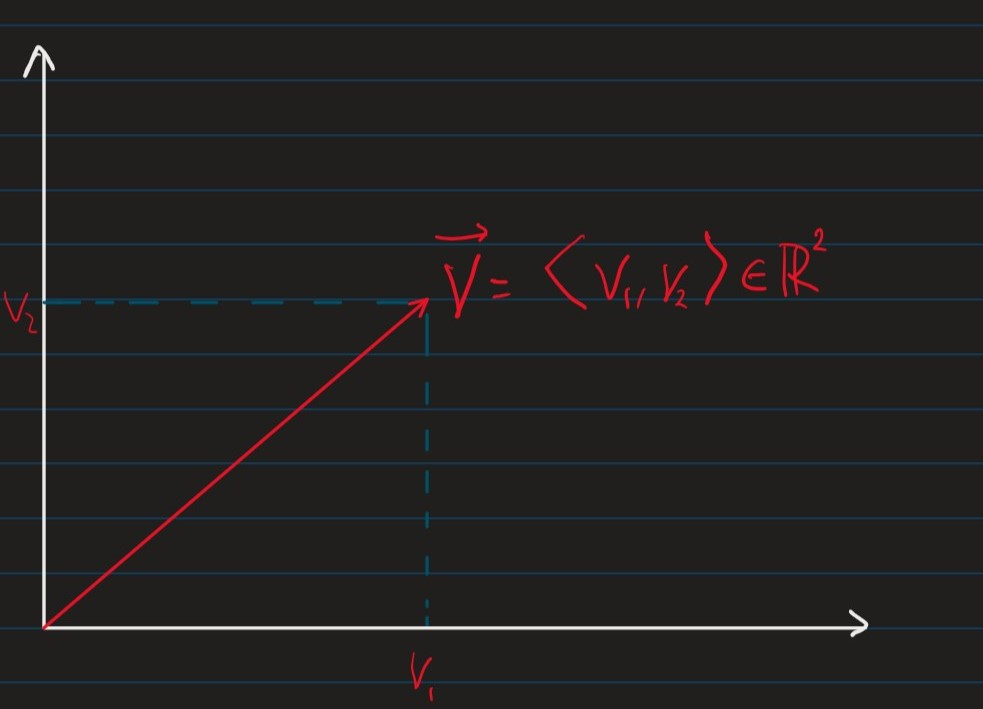
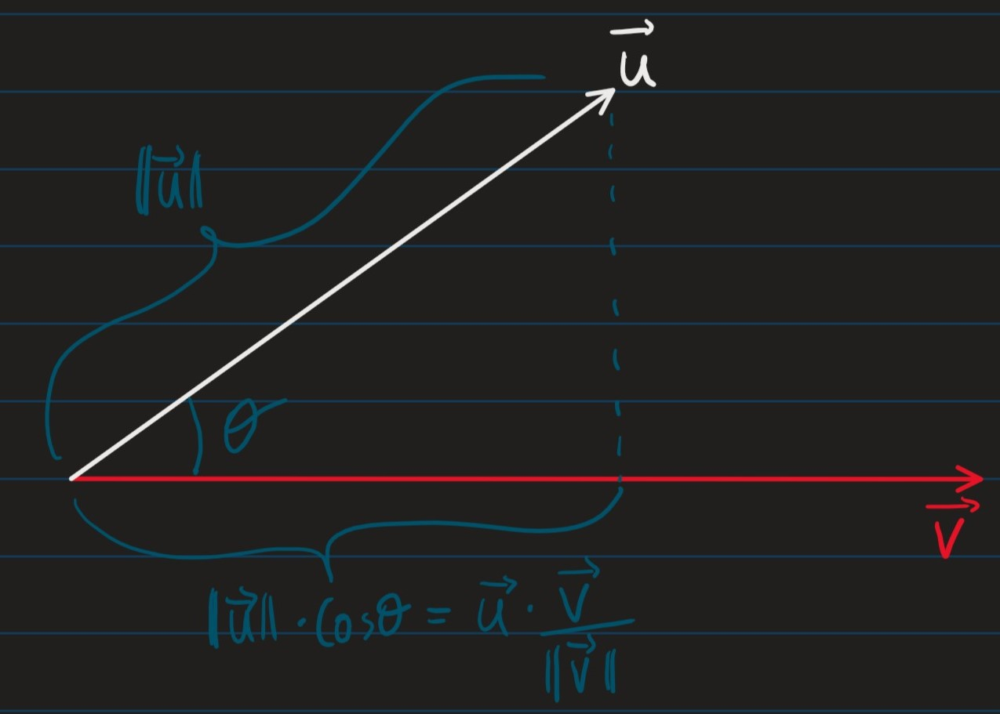

Lecture 4
- So far we have only looked at models with 1 parameter
(1)
$$ J(\Theta) = \mathbb{E}{\mathcal{X,Y}\sim \mathcal{D}}-\log{Pmodel}(\mathcal{Y | X; \Theta)}$$
- We will nw look at models with many variables
Functions of multiple variables
Vectors
- Vectors are “arrays” of numbers e.g.
(2)
$$\vec{v} = \langle v_1, \cdots, v_n \rangle \in \R^n$$
- We can consider a vector as a point i a $n$ dimensional space where each point $v_i$ gives the coordinate along the $i^{th}$ axis.

Properties of vectors
- Norms: assigns “length” to vectors
- The $L^{p}$-norm of a vector $\vec{v}\in \R^n$ is
(3)
$$|\vec{v}|p = (\sum{i=1}^{n}|v_i|^p)^{\frac{j}{p}}$$
- The special case where $p=2$, $L^2$-norm is the euclidean norm/ distance denoted $|\vec{v}| = |\vec{v}|_2$
Operations on vectors
$$\forall a \in \R, \ \vec{u} \in \langle u_1, \cdots , u_m \rangle \in \R^m
\vec{v} \in \langle v_1, \cdots, v_m \rangle \in \R^m $$
- $a \cdot \vec{u} = \langle au_1, \cdots, au_m \rangle \leftarrow$ Scalar Multiplication
- $\vec{v} + \vec{u} = \langle v_1 + u_1, \cdots , v_n+u_n \rangle \leftarrow$ Vector addition
- $\vec{v}\cdot\vec{u} = \sum_{i=1}^{m} v_iu_i \leftarrow$ Dot product
Theorem: Geometric interpretation of dot-product
- Given the 2 vectors $\vec{u}, \vec{v}$, defined above, if the angle between them is $\theta$:
(4)
$$\vec{u}\cdot\vec{v} = |\vec{u}| \cdot |\vec{v}|\cdot\cos\theta$$

Partial Differentiation
- The partial derivative of the function $f(x_1,\cdots,x_n)$ in the direction of the variable $x_i$ at the point $\vec{u} = \langle u_1, \cdots, u_n \rangle$ is
(5)
$$\frac{\delta f}{\delta x_i}(u_1,\cdots,un) = \lim{h\rightarrow 0} \frac{f(u_1,\cdots,u_i+h,\cdots,u_n)-f(u_1,\cdots, u_n)}{h}$$
Gradient
- The gradient of function $f(x_1,\cdots, x_n)$ is
(6)
$$\nabla f := (\frac{\delta f}{\delta x_1},\cdots, \frac{\delta f}{\delta x_n})$$
- And iff $f: \R^n \rightarrow \R$, then $\nabla f : \R^n \rightarrow \R^n$
- i.e. the gradient is a vector-valued function
Chain Rule (Special Case)
| For 1D functions | For higher dimensional functions |
|---|---|
| if $y=f(u)$ and $u = g(x)$ $\$ then $\$ $\frac{\delta y}{\delta x}= \frac{\delta y}{\delta u} \cdot \frac{\delta u}{\delta x}$ | If $y=f(u_1,\cdots, u_m)$ and $u_i = g(x_1,\cdots,x_m)$ for $i \in {1,\cdots,m}$ $\$ then $\$ $\frac{\delta y}{\delta xi} = \sum{j=1}^m \frac{\delta y}{\delta u_j}\cdot \frac{\delta u_j}{\delta x_i}$ |
Directional Derivative
Definition
- Given a function:
(7)
$$f : \R^m \rightarrow \R$$
- And a vector
(8)
$$\vec{v} = \langle v_1,\cdots,v_m\rangle \mid |\vec{v}| = 1$$
- The directional derivative of $f$ at $\vec{x} = \langle x_1, \cdots, x_m \rangle$ along the vector $\vec{v}$ is
(9)
$$\nabla{\vec{v}} f(\vec{x}) := \lim{\alpha \rightarrow 0} \frac{f(\vec{x}+ \alpha \vec{v}) - f(\vec{x})}{\alpha}$$ $$= \lim_{\alpha \rightarrow 0} \frac{f(x_1+ \alpha v_1 , \cdots, x_m + \alpha v_m)- f(x_1,\cdots, x_m)}{\alpha}$$
Computing the Directional Derivative
- The following theorem implies that if we know the gradient $\nabla f$, then we can compute the derivative in any direction, $\vec{v}$
Theorem
(10)
$$\nabla_{\vec{v}}f(x) = \nabla f(x)\cdot\vec{v}$$
- Where:
- $\nabla_{\vec{v}}f(x) \leftarrow$ is the directional derivative
- $\nabla f(x) \leftarrow$ is the gradient
Proof
- Define the function
(11)
$$h(\alpha) := f(u_1,\cdots,u_m)$$
- Where:
- $u_i := x_i + \alpha v_i, \forall i \in {1,\cdots,m}$
- Note that $h : \R \rightarrow \R$, i.e. $h$ is a 1D real-valued function
(12)
$$\nabla{\vec{v}} f(\vec{x}) := \lim{\alpha \rightarrow 0} \frac{f(\vec{x}+ \alpha \vec{v}) - f(\vec{x})}{\alpha}$$
$$=\lim_{\alpha\rightarrow 0} \frac{h(0+\alpha)=h(0)}{\alpha}$$
(13)
$$= h’(0)$$
By definition of Derivative
Using the Chain Rule, we have:
(14)
$$h’(\alpha) = \frac{\delta h}{\delta \alpha} = \sum_{i=1}^m \frac{\delta ui}{\delta \alpha} = \sum{i=1}^m \frac{\delta f}{\delta u_i}\cdot v_i$$
- Note that for $\alpha = 0$, we have:
(15)
$$u_i = x_i + 0 \cdot v_i = x_i$$
(16)
$$\nabla{\vec{v}}f(\vec{x}) = h’(0) = \sum{i=1}^m \frac{\delta f}{\delta x_i}\cdot v_i = \nabla f(x)\cdot \vec{v}$$
The Gradient Points Towards the Steepest Ascent
- The vector $\vec{v}$ along which $f$ has steepest ascent is:
(17)
$$\argmax{\vec{v} , |\vec{v}|=1} \nabla{\vec{v}}f(\vec{x})$$
$$= \argmax_{\vec{v} , |\vec{v}|=1} \nabla f(\vec{x}) \cdot \vec{v}$$
$$= \argmax_{\vec{v} , |\vec{v}|=1} |\nabla f(\vec{x})||\vec{v}|\cdot \cos\theta$$
$$ = \argmax_{\vec{v} , |\vec{v}|=1} |\nabla f(\vec{x}) |\cdot \cos\theta$$
Where $\cos\theta$ is the angle between $\vec{v}$ and $\nabla f(\vec{x})$
$\implies$ The vector $\vec{v}$ which gives the steepest ascent is the vector that has angle $\theta=0$ to $\nabla f$, i.e. the vector $\vec{v}$ which points in the same direction as $\nabla f$
Method of Gradient Descent
*Input: cost function: $J : \R^m \rightarrow \R$* learning rate: $\epsilon \in \R, \epsilon > 0$
$\vec{x} \leftarrow$ Some initial point in $\R^m$ while termination condition not met { $\vec{x}\leftarrow \vec{x} - \epsilon \cdot \nabla J(\vec{x})$ }